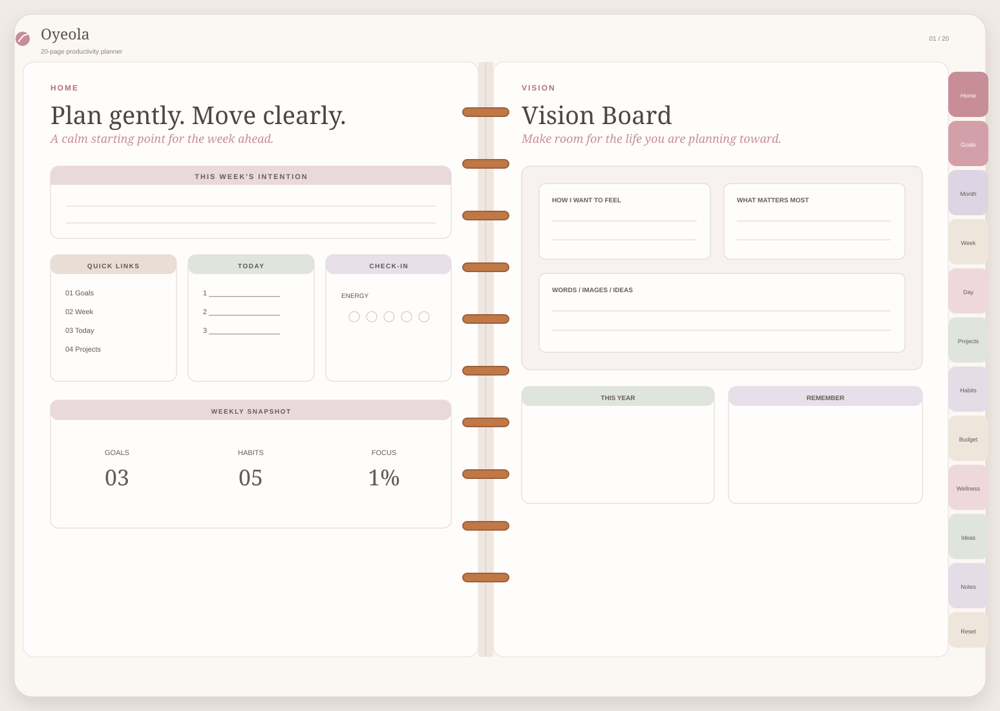

Published digital planner work
The Busy Mom's Money Reset
A hyperlinked planning product with a clear structure for personal financial tracking.
View the planner projectDigital products / 06
Useful planning tools with clear navigation and thoughtful page systems.
Portfolio / Digital products
A relevant, published example from the current portfolio.

Published digital planner work
A hyperlinked planning product with a clear structure for personal financial tracking.
View the planner projectThis is a digital planner portfolio project; the linked page provides its own work details.
What this service covers
A planner should help the customer do something, not only look beautiful. I organize sections around real tasks and make the navigation work across tablets and desktop.
Planner content structure and page systems
Hyperlinked navigation and reusable templates
Digital product exports and usability review